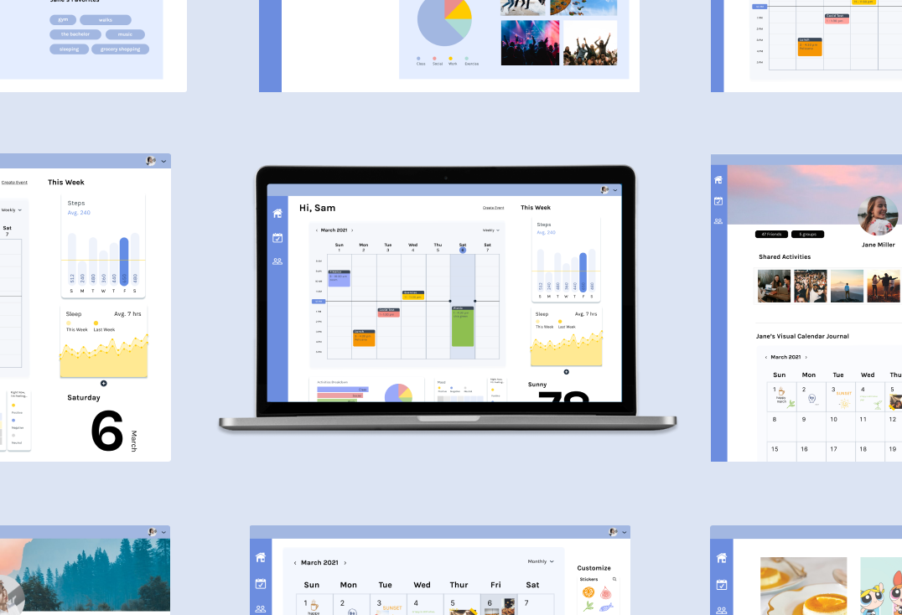
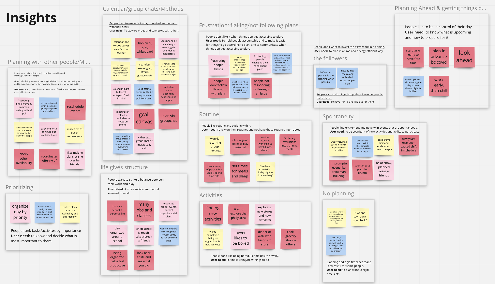
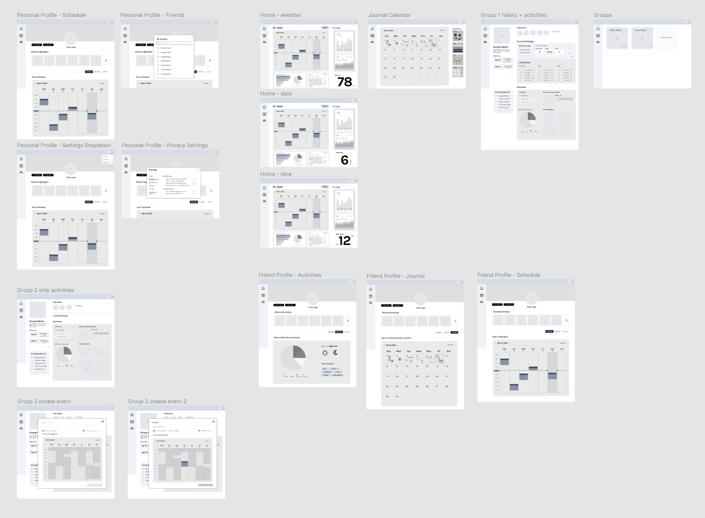
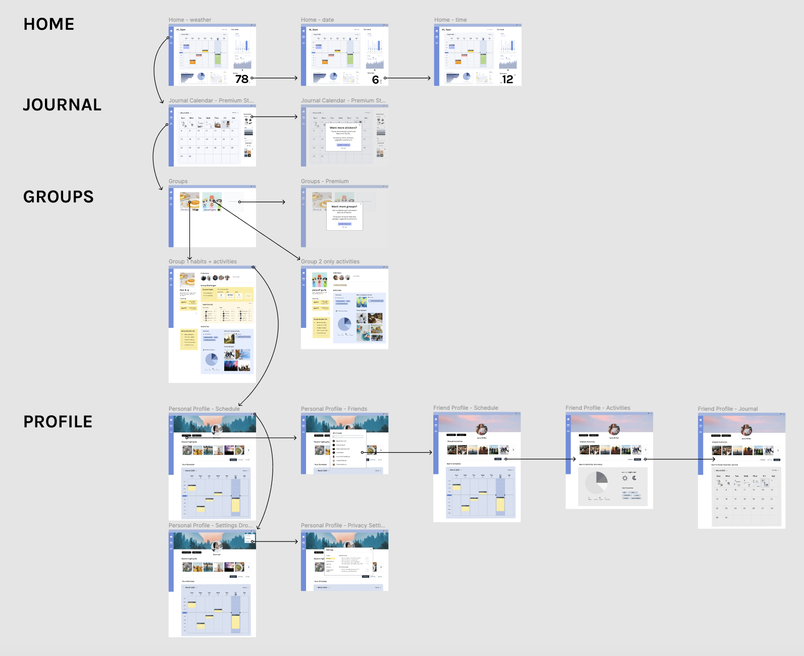

Figma
4 designers
I worked with 3 other designers to design this desktop app experience for OIDD415: Product Design. The course project prompt was to "develop a new product to address a product category in the college student market". We had the freedom to choose to design either a physical or digital product, and my team went with digital to create Soular. We worked remotely on this project over the course of the semester (along with other assignments).
Soular is a desktop app that makes it quick, simple, and fun for students to make plans with others and reflect and find meaning in every day. As college students, we often get caught up in packed timelines and experience scheduling-related stress, juggling between academics, extracurriculars and time for ourselves. However, at the end of those precious 24 hours, we find joy in being in control of our day, and we treasure the hours spent connecting with the important people in our lives. Soular addresses this need using four key features: a customized lifestyle dashboard, journal, user profiles, and groups.
Before settling on our problem and concept for Soular, my teammates and I each came up with 10 opportunity statements (eg. "In what way might we encourage work habits that help make taking classes online less taxing?") which we discussed and ultimately narrowed down to 5 potential ideas. We received feedback from our classmates on these opportunities and decided to tackle the problem statement: "In what way might we make making plans and scheduling more convenient and centralized for a group of students?" As we did more user research, we ended up redefining the mission statement later in the semester to "In what way might we help students easily plan and reflect on enjoyable, productive, and healthy activities in their day?".
We interviewed fellow students to learn more about their daily lifestyle and pain points related to planning. After collecting individual notes, we used Miro to organize them by key themes we noticed.
 After narrowing down the solution space, we were ready to start sketching and brainstorming key features.
- Summary calendar with upcoming events
- Display habit trend statistics (eg. sleep hrs)
- Friendly reminders (eg. bring an umbrella since it's likely to rain)
- Calendar availability
- Favorite activities/locations
- Settings (including privacy adjustments)
- Challenge setting and tracking with friends
- Keep track of shared memories
- Create new schedules
- Switch journal themes
- Connect with phone photos (recommends most recent photo to encourage journaling)
- Manually add stickers, stamps, captions for each day
I took charge of the Profile and Groups design streams while my teammates worked more closely on the Home Dashboard, Journal Calendar, and Onboarding pages.
We put our ideas together into the initial wireframes on Figma:
 My teammates and I interviewed a few users who tested out our lofi prototype. We anticipated concerns such as confusion with the variety of features or difficulties with
initial user adoption and crafted testing questions with this in mind.
Overall our users expressed positive experiences with the prototype and indicated that they would be interested in using it.
The key pieces of constructive feedback we received are:
1. Usage of certain features like how photos will be uploaded or how statistics are gathered was unclear
2. The onboarding tutorial process highlighted things that may not need to be explained
3. The privacy options should be made more clear - some students only want to share their information with close friends
We took this feedback into account for our final prototype by communicating how data could be synced with other devices, simplifying the onboarding steps, and highlighting the privacy settings options in our prototype.
We settled on our color theme after considering several combinations of light, dawn-inspired colors.
 A few more feedback sessions and iterations after this assembly drawing, we arrived at our final prototype!
Soular was a rewarding project to work on over 3 months - we ranked 2nd out of 15 total teams in terms of student voting for the top product pitchs. But beyond the positive feedback from fellow students, this was my first full-length product design experience as well as my first time not being one of the least experienced designers on the team. It was exciting to see how all the bits and pieces I picked up previously from a few condensed design challenges and readings became valuable tips for my teammates, and I was also able to learn a lot more about the user research process. Nonetheless, there's still a lot I hope to improve upon, including more consistent use of spacing in design systems and more practice with web design!